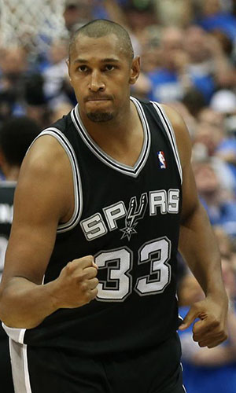

|  |
Матчи |
81 |
|
Передачи (всего/среднее) |
233 |
2.9 |
| В основе |
15 |
|
Подборы в защите (всего/среднее) |
270 |
3.3 |
| Время (всего/среднее) |
1984:19 |
24:30 |
Подборы в атаке (всего/среднее) |
78 |
1 |
| Очки (всего/среднее) |
708 |
8.7 |
Подборы (всего/среднее) |
348 |
4.3 |
| 2-очковые броски (всего/среднее) |
237/463 |
2.9/5.7 |
Перехваты (всего/среднее) |
36 |
0.4 |
| 2-очковые броски (% реализации) |
51.2% |
|
Потери (всего/среднее) |
126 |
1.6 |
| 3-очковые броски (всего/среднее) |
54/170 |
0.7/2.1 |
Блокшоты (всего/среднее) |
23 |
0.3 |
| 3-очковые броски (% реализации) |
31.8% |
|
Блокшоты соперника (всего/среднее) |
26 |
0.3 |
| Штрафные броски (всего/среднее) |
72/93 |
0.9/1.1 |
Фолы (всего/среднее) |
148 |
1.8 |
| Борис Диао |
Штрафные броски (% реализации) |
77.4% |
|
Коэффициент полезности (всего/среднее) |
685 |
8.5 |